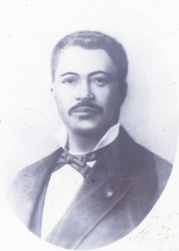

Recurso multimedia 1 · Línea del tiempo interactiva
La vida y el legado de Gregorio Luperón
Este recurso original resume los momentos más importantes de su vida. Selecciona cada año para leer su explicación.

1839
Nacimiento
El 8 de septiembre de 1839 nace Gregorio Luperón en Puerto Plata, en una familia humilde.
Retrato: General Gregorio Luperón de civil, autor desconocido, Wikimedia Commons (dominio público).
Recurso multimedia 2 · Mapa interactivo
Mapa del recorrido
Recorrido general de la excursión, desde San Cristóbal hasta Puerto Plata. Selecciona cada provincia para ver qué representa en el viaje. El mapa es un esquema y no muestra paradas exactas.
1
San Cristóbal
Punto de partida, en el sur del país, cerca del mar Caribe.
Ruta general: San Cristóbal → Monseñor Nouel → La Vega → Santiago → Espaillat → Puerto Plata.